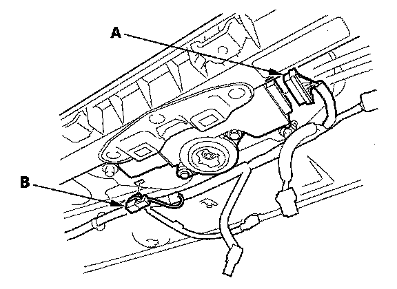
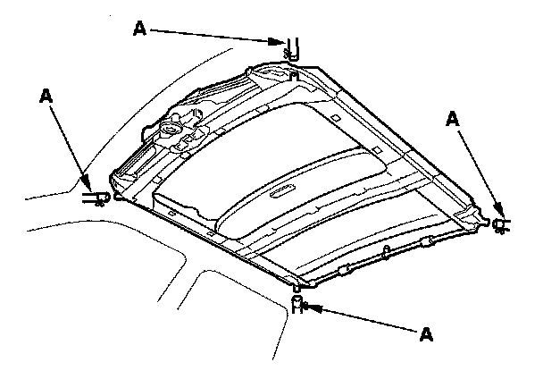
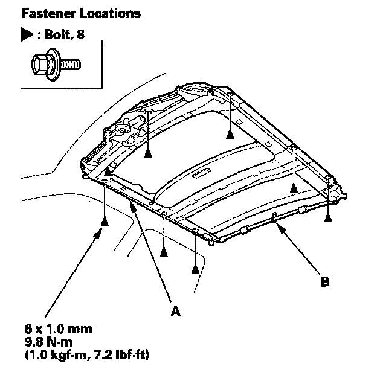
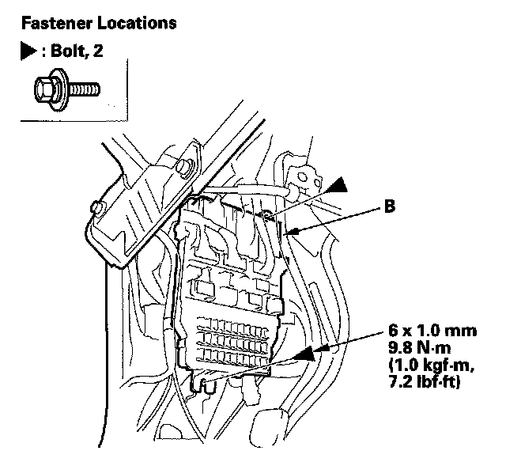
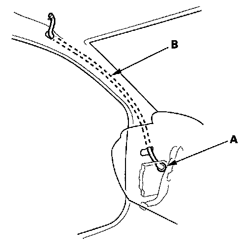
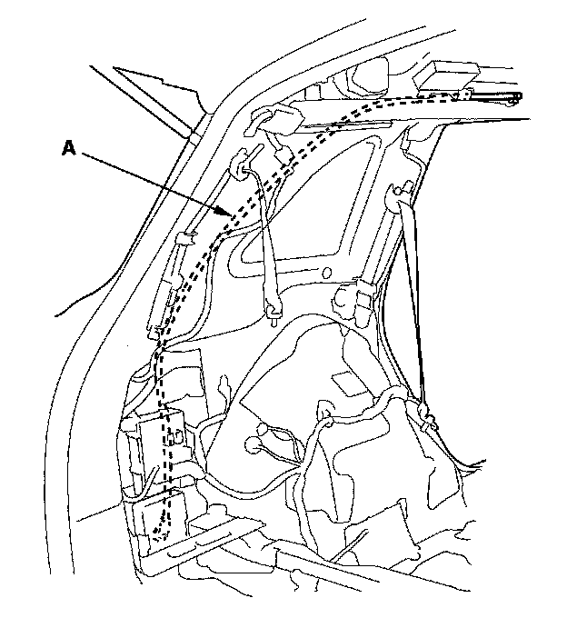
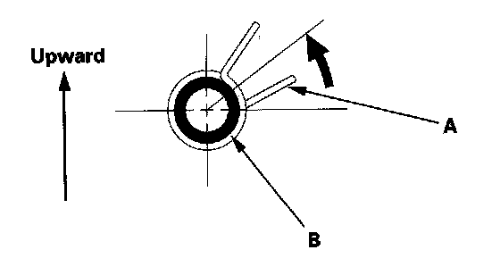

Sunroof / Moonroof Frame: Service and Repair
Frame and Drain Tube ReplacementSRS components are located in this area. Review the SRS component locations and the precautions and procedures before doing repairs or service.
1. Remove these items:
- Headliner
- Moonroof glass
- With rear entertainment system: Rear controller and display

2. Put on gloves to protect your hands. Disconnect the motor connector (A), and detach the moonroof wire harness connector (B) from the moonroof frame.

3. Disconnect the drain tubes (A)

4. With an assistant holding the frame (A), remove the bolts and release the rear middle drain tube clip (B), then remove the frame.
Front Drain Tube
5. Remove these items:
- Front door sill trim
- Kick panel
- Driver's dashboard undercover
- Passenger's dashboard undercover
6. Passenger's side: Remove the glove box damper from the pivot on the glove box. While holding the glove box, release the glove box stop on each side from the dashboard by pushing them in, then lower the glove box.

7. Driver's side: Remove the bolts, then move the under-dash fuse/relay box (A) as needed.

8. To remove a front drain valve (A) from the body, tie a string to the top end of the drain tube, then pull the front drain tube (B) down out of the A-pillar. Leave the string in the pillar to use when reinstalling the drain tube.
Rear Drain Tube
9. Remove these items:
- Rear side trim panel
- Left side: Subwoofer box

10. Tie a string to the top end of the rear drain tube (A), then pull the drain tube down out of the pillar. Leave the string in the pillar to use when reinstalling the drain tube.

11. Install the frame and drain tube in the reverse order of removal, and note these items:
- Before installing the frame, clear the drain tubes and drain valves using compressed air.
- When installing, tie the string that was left in the pillar to the top end of the new drain tube and pull it up into the roof.
- Check the frame seal.
- Clean the surface of the frame.
- Make sure the connectors are plugged in properly.
- When connecting the drain tube, slide it over the frame nozzle at least 10 mm (0.39 in.).
- Install the tube clip (A) on the drain tube (B) as shown.
- After all parts are installed, including the headliner, reset the moonroof control unit.
- Adjust the glass height alignment.
12. Check for water leaks. Let the water run freely from a hose without a nozzle. Do not use a high-pressure spray.